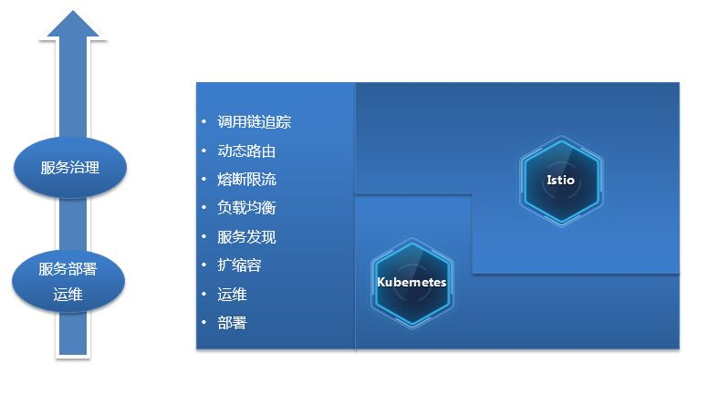
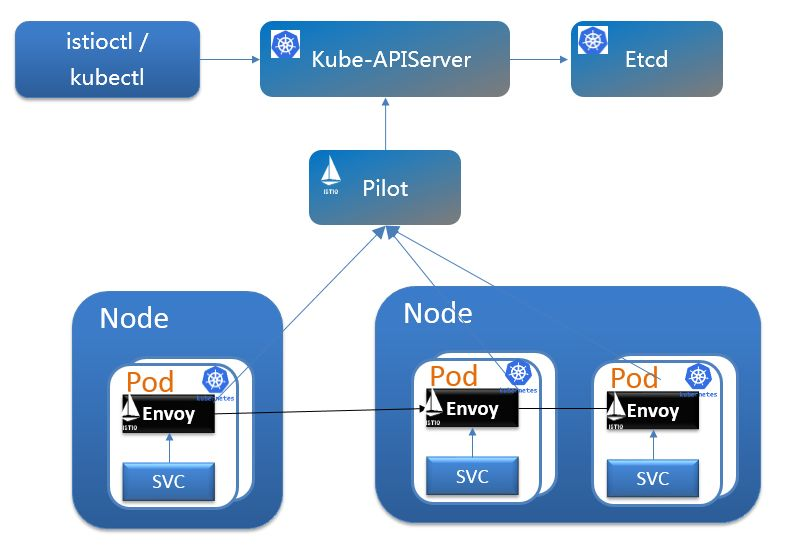
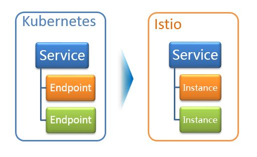
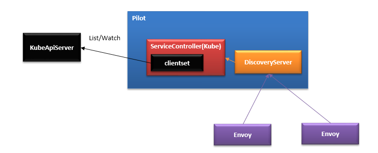
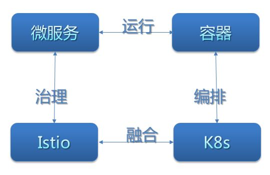

Istio技术与实践02：源码解析之Istio on Kubernetes 统一服务发现
【摘要】 本文基于Pilot服务发现Kubernetes部分源码重点介绍在Istio on Kubernetes环境下，如何基于Pilot的Adapter机制实现Istio管理的服务直接使用Kubernetes service来做统一服务发现，避免了其他微服务框架运行在Kubernetes环境时上下两套服务目录的局面。并以此为入口从架构、场景等方面总结下Istio和Kubernetes的结合关系。
前言
文章Istio技术与实践01： 源码解析之Pilot多云平台服务发现机制结合Pilot的代码实现介绍了Istio的抽象服务模型和基于该模型的数据结构定义，了解到Istio上只是定义的服务发现的接口，并未实现服务发现的功能，而是通过Adapter机制以一种可扩展的方式来集成各种不同的服务发现。本文重点讲解Adapter机制在Kubernetes平台上的使用。即Istio on Kubernetes如何实现服务发现。
Kubernetes和Istio的结合Kubernetes和Istio的结合
从场景和架构上看Istio和Kubernetes都是非常契合的一种搭配。从场景和架构上看Istio和Kubernetes都是非常契合的一种搭配。

首先从场景上看Kuberntes为应用负载的部署、运维、扩缩容等提供了强大的支持。通过Service机制提供了负载间访问机制，通过域名结合Kubeproxy提供的转发机制可以方便的访问到对端的服务实例。因此如上图可以认为Kubernetes提供了一定的服务发现和负载均衡能力，但是较深入细致的流量治理能力，因为Kubnernetes所处的基础位置并未提供，而Istio正是补齐了这部分能力，两者的结合提供了一个端到端的容器服务运行和治理的解决方案。
从架构看Istio和Kubernetes更是深度的结合。 得益于Kuberntes Pod的设计，数据面的Sidecar作为一种高性能轻量的代理自动注入到Pod中和业务容器部署在一起，接管业务容器的inbound和outbound的流量，从而实现对业务容器中服务访问的治理。在控制面上Istio基于其Adapter机制集成Kubernetes的域名，从而避免了两套名字服务的尴尬场景。

在本文中将结合Pilot的代码实现来重点描述图中上半部分的实现，下半部分的内容Pilot提供的通用的API给Envoy使用可参照上一篇文章的DiscoverServer部分的描述。
基于Kubernetes的服务发现
理解了Pilot的ServiceDiscovery的Adapter的主流程后，了解这部分内容比较容易。Pilot-discovery在initServiceControllers时，根据服务注册配置的方式，如果是Kubernetes，则会走到这个分支来构造K8sServiceController。
1case serviceregistry.KubernetesRegistry:
2s.createK8sServiceControllers(serviceControllers, args); err != nil {
3return err
4}
创建controller其实就是创建了一个Kubenernetes的controller，可以看到List/Watch了Service、Endpoints、Node、Pod几个资源对象。
1// NewController creates a new Kubernetes controller
2func NewController(client kubernetes.Interface, options ControllerOptions) *Controller {
3 out := &Controller{
4 domainSuffix: options.DomainSuffix,
5 client: client,
6 queue: NewQueue(1 * time.Second),
7 }
8 out.services = out.createInformer(&v1.Service{}, "Service", options.ResyncPeriod,
9 func(opts meta_v1.ListOptions) (runtime.Object, error) {
10 return client.CoreV1().Services(options.WatchedNamespace).List(opts)
11 },
12 func(opts meta_v1.ListOptions) (watch.Interface, error) {
13 return client.CoreV1().Services(options.WatchedNamespace).Watch(opts)
14 })
15 out.endpoints = out.createInformer(&v1.Endpoints{}, "Endpoints", options.ResyncPeriod,
16 func(opts meta_v1.ListOptions) (runtime.Object, error) {
17 return client.CoreV1().Endpoints(options.WatchedNamespace).List(opts)
18 },
19 func(opts meta_v1.ListOptions) (watch.Interface, error) {
20 return client.CoreV1().Endpoints(options.WatchedNamespace).Watch(opts)
21 })
22 out.nodes = out.createInformer(&v1.Node{}, "Node", options.ResyncPeriod,
23 func(opts meta_v1.ListOptions) (runtime.Object, error) {
24 return client.CoreV1().Nodes().List(opts)
25 },
26 func(opts meta_v1.ListOptions) (watch.Interface, error) {
27 return client.CoreV1().Nodes().Watch(opts)
28 })
29 out.pods = newPodCache(out.createInformer(&v1.Pod{}, "Pod", options.ResyncPeriod,
30 func(opts meta_v1.ListOptions) (runtime.Object, error) {
31 return client.CoreV1().Pods(options.WatchedNamespace).List(opts)
32 },
33 func(opts meta_v1.ListOptions) (watch.Interface, error) {
34 return client.CoreV1().Pods(options.WatchedNamespace).Watch(opts)
35 }))
36return out
}
在 createInformer 中其实就是创建了SharedIndexInformer。这种方式在Kubernetes的各种Controller中广泛使用。Informer调用 APIserver的 List 和 Watch 两种类型的 API。在初始化的时，先调用 List API 获得全部资源对象，缓存在内存中; 然后，调用 Watch API 去 Watch这种这种资源对象，维护缓存。
1Service informer := cache.NewSharedIndexInformer(
2 &cache.ListWatch{ListFunc: lf, WatchFunc: wf}, o,
3 resyncPeriod, cache.Indexers{})
下面看下Kubernetes场景下对ServiceDiscovery接口的实现。我们看下Kubernetes下提供的服务发现的接口，包括获取服务列表和服务实例列表。
1func (c *Controller) GetService(hostname model.Hostname) (*model.Service, error) {
2 name, namespace, err := parseHostname(hostname)
3 item, exists := c.serviceByKey(name, namespace)
4 svc := convertService(*item, c.domainSuffix)
5 return svc, nil
6 }
最终是从infromer的缓存中获取Service资源对象。
1func (c *Controller) serviceByKey(name, namespace string) (*v1.Service, bool) {
2 item, exists, err := c.services.informer.GetStore().GetByKey(KeyFunc(name, namespace))
3 return item.(*v1.Service), true
4}
获取服务实例列表也是类似，也是从Informer的缓存中获取对应资源，只是涉及的对象和处理过程比Service要复杂一些。
1func (c *Controller) InstancesByPort(hostname model.Hostname, reqSvcPort int,
2 labelsList model.LabelsCollection) ([]*model.ServiceInstance, error) {
3 // Get actual service by name
4 name, namespace, err := parseHostname(hostname)
5 item, exists := c.serviceByKey(name, namespace)
6 svc := convertService(*item, c.domainSuffix)
7 svcPortEntry, exists := svc.Ports.GetByPort(reqSvcPort)
8 for _, item := range c.endpoints.informer.GetStore().List() {
9 ep := *item.(*v1.Endpoints)
10 …
11 }
12 … }
13 }
14return nil, nil
15 }
可以看到就是做了如下的转换,将Kubernetes的对一个服务发现的数据结构转换成Istio的抽象模型对应的数据结构。

其实在conversion.go中提供了多个convert的方法将Kubernetes的数据对象转换成Istio的标准格式。除了上面的对Service、Instance的convert外，还包含对port，label、protocol的convert。如下面protocol的convert就值得一看。
1func ConvertProtocol(name string, proto v1.Protocol) model.Protocol {
2 out := model.ProtocolTCP
3 switch proto {
4 case v1.ProtocolUDP:
5 out = model.ProtocolUDP
6 case v1.ProtocolTCP:
7 prefix := name
8 i := strings.Index(name, "-")
9 if i >= 0 {
10 prefix = name[:i]
11 }
12 protocol := model.ParseProtocol(prefix)
13 if protocol != model.ProtocolUDP && protocol != model.ProtocolUnsupported {
14 out = protocol
15 }
16 }
17 return out
18 }
看过Istio文档的都知道在使用Istio和Kuberntes结合的场景下创建Pod时要求满足4个约束。其中重要的一个是Port必须要有名，且Port的名字名字的格式有严格要求：Service 的端口必须命名，且端口的名字必须满足格式 <protocol>[-<suffix>]，例如name: http2-foo 。在K8s场景下这部分我们一般可以不对Pod命名的，看这段解析的代码可以看服务的Protocol是从name中解析出来的。如果Service的protocol是UDP的，则协议UDP；如果是TCP的，则会从名字中继续解析协议。如果名称是不可识别的前缀或者端口上的流量就会作为普通的 TCP 流量来处理。
另外同时在Informer 中添加对add、delete、和update事件的回调，分别对应 informer 监听到创建、更新和删除这三种事件类型。可以看到这里是将待执行的回调操作包装成一个task，再压到Queue中，然后在Queue的run()方法中拿出去挨个执行，这部分不细看了。
到这里Kuberntes特有的服务发现能力就介绍完了。即kube\controller也实现了ServiceDiscovery中规定的服务发现的接口中定义的全部发方法。除了初始化了一个kube controller来从Kubeapiserver中获取和维护服务发现数据外，在pilot server初始化的时候，还有一个重要的initDiscoveryService初始化DiscoveryServer，这个discoveryserver使用contrller，其实是ServiceDiscovery上的服务发现供。发布成通用协议的接口，V1是rest，V2是gRPC,进而提供服务发现的能力给Envoy调用，这部分是Pilot服务发现的通用机制，在上篇文章的adapter机制中有详细描述，这里不再赘述。
总结
以上介绍了istio基于Kubernetes的名字服务实现服务发现的机制和流程。整个调用关系如下，可以看到和其他的Adapter实现其实类似。

-
-
Discoveryserver基于Controller上维护的服务发现数据，发布成gRPC协议的服务供Envoy使用。
前面只是提到了服务发现的数据维护，可以看到在Kubernetes场景下，Istio只是是使用了kubeAPIServer中service这种资源对象。在执行层面，说到Service就不得不说Kuberproxy，因为Service只是一个逻辑的描述，真正执行转发动作的是Kubeproxy，他运行在集群的每个节点上，把对Service的访问转发到后端pod上。在引入Istio后，将不再使用Kubeproxy做转发了，而是将这些映射关系转换成为pilot的转发模型，下发到envoy进行转发，执行更复杂的控制。这些在后面分析Discoveryserver和Sidecar的交互时再详细分析。
在和Kubnernetes结合的场景下强调下几个概念：
Istio的治理Service就是Kubernetes的Service。不管是服务描述的manifest还是存在于服务注册表中服务的定义都一样。 Istio治理的是服务间的通信。这里的服务并不一定是所谓的微服务，并不在乎是否做了微服务化。只要有服务间的访问，需要治理就可以用。一个大的单体服务打成一个镜像在Kuberntes里部署起来被其他负载访问和分拆成微服务后被访问，在治理看来没有任何差别。

本文只是描述了在服务发现上两者的结合，随着分析的深入，会发现Istio和Kubernetes的更多契合。K8s编排容器服务已经成为一种事实上的标准；微服务与容器在轻量、快速部署运维等特征的匹配，微服务运行在容器中也正成为一种标准实践；随着istio的成熟和ServiceMesh技术的流行，使用Istio进行微服务治理的实践也正越来越多；而istio和k8s的这种天然融合使得上面形成了一个完美的闭环。对于云原生应用，采用kubernetes构建微服务部署和集群管理能力，采用Istio构建服务治理能力，也将成为微服务真正落地的一个最可能的途径。有幸参与其中让我们一起去见证和经历这个趋势吧。
注：文中代码基于commit：505af9a54033c52137becca1149744b15aebd4ba